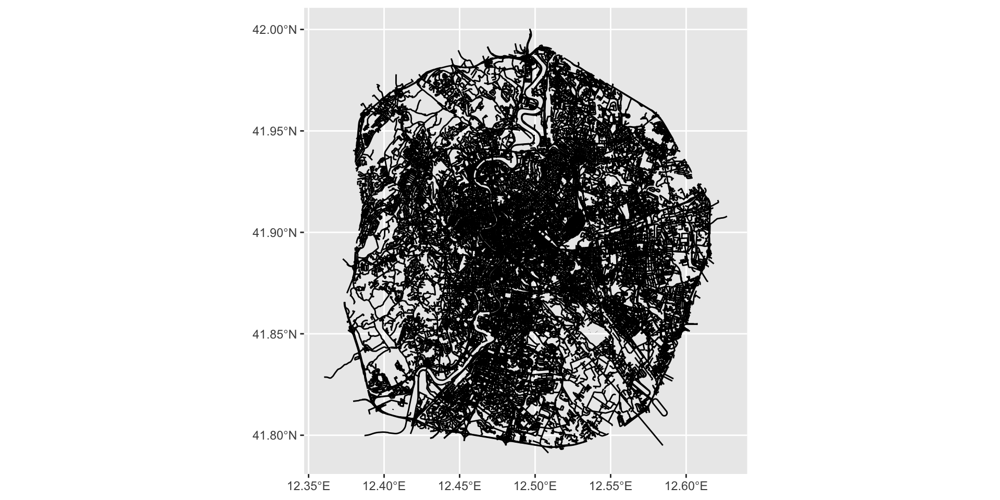
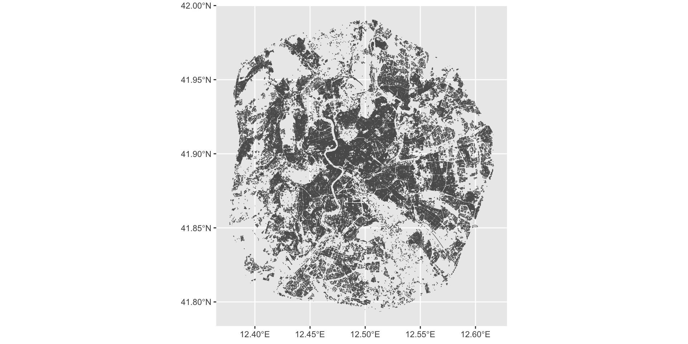
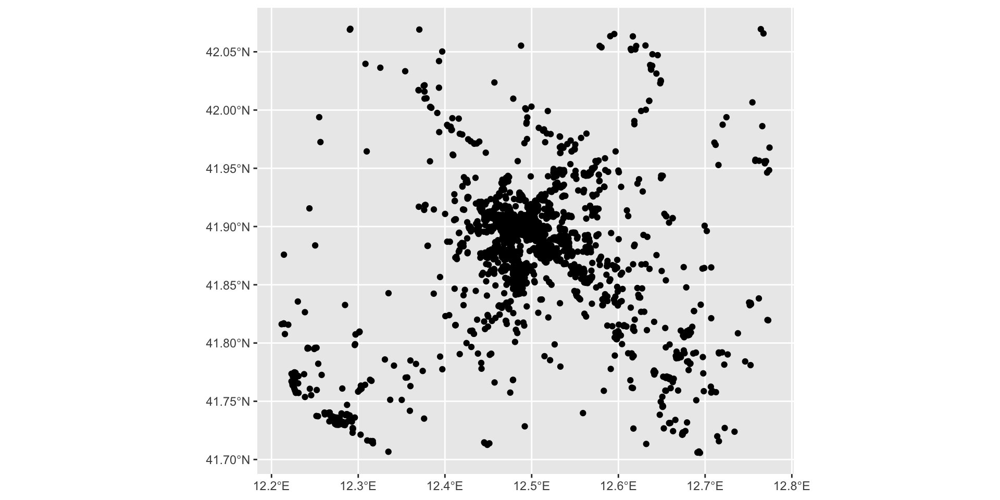
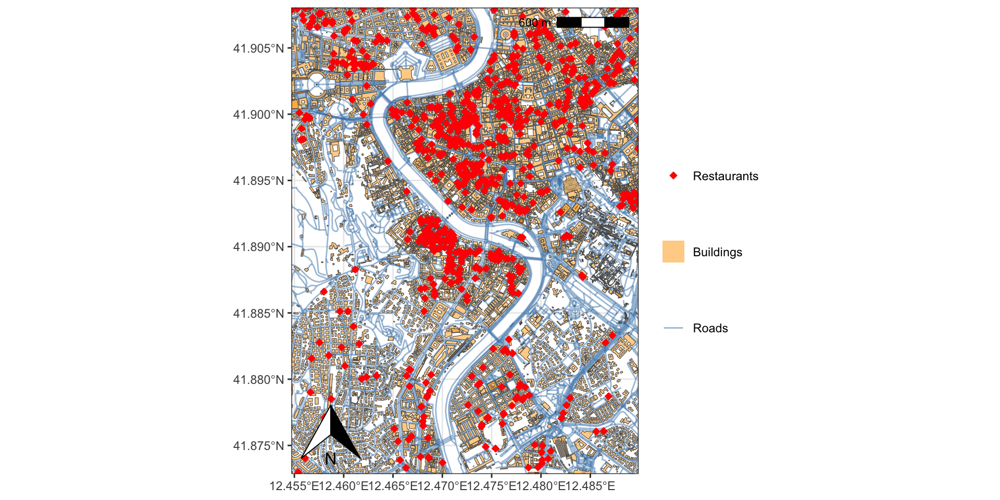
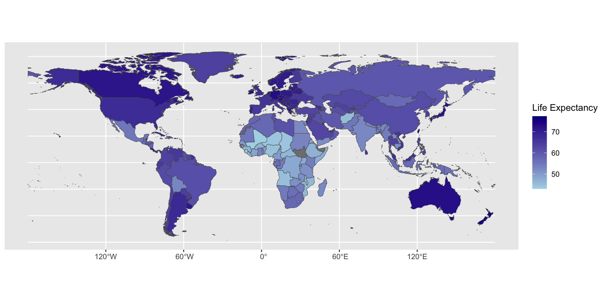
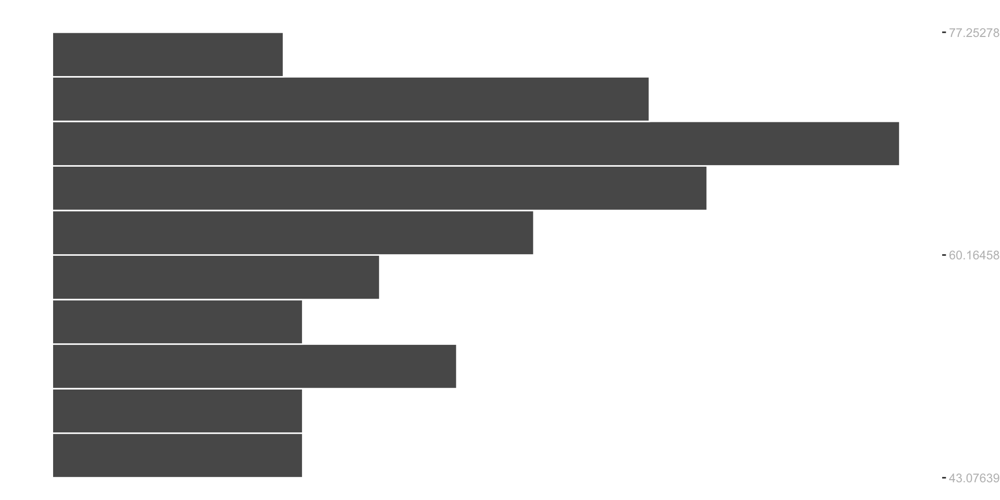
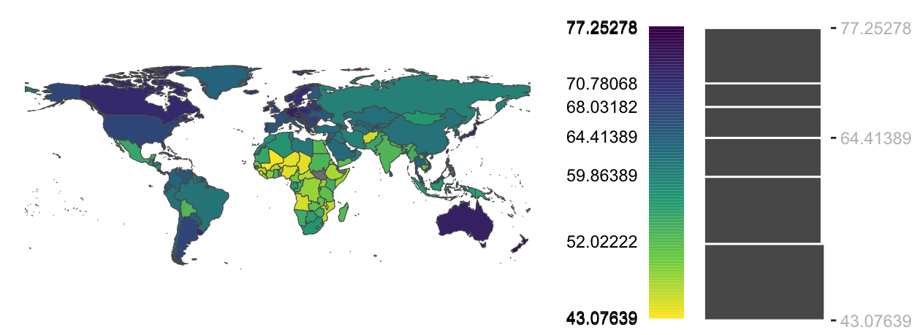
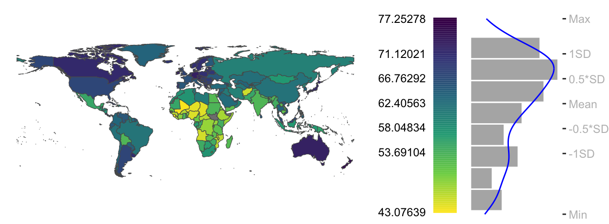

Note that selection.gdb and world_shp should be separate folders
Your folder
Note that selection.gdb and world_shp should be separate folders
Mapping
We will first map points, lines, and polygons
We will then map then together
We will then make a map that is visually appealing and which contains a variety of elements and options
Mapping
This is how we first read our data:
#Step1: Loading the librarieslibrary(sf)library(geojsonsf)library(ggplot2)#Step2: Reading the linesgis_osm_roads <-st_read(dsn="./data/selection.gdb",layer="gis_osm_roads", quiet = T)#Step3: Reading the polygonsgis_buildings <-st_read(dsn="./data/selection.gdb",layer="gis_osm_buildings", quiet = T)#Step4: Reading pointsrestaurants <-geojson_sf("./data/restaurant.geojson")restaurants<-subset(restaurants, select =c(name, `addr:street`))restaurants2<-subset(restaurants, !is.na(restaurants$name) |!is.na(restaurants$`addr:street`) )
Mapping lines
ggplot()+geom_sf(data=gis_osm_roads)

Mapping polygons
ggplot()+geom_sf(data=gis_buildings)

Mapping points
ggplot()+geom_sf(data=restaurants2)

Mapping Everything
As you might have guessed, this is GIS data covering central Rome
If we add them together, we can obtain the following map

Mapping Everything
This how can can make that map.
Part one is about identifying a relevant zoom level.
#Step1: Loading the relevant librarylibrary(stringr)#Step2: Choosing a geographuc pointjcu <-subset(gis_buildings, name=="John Cabot University - Tiber Campus")#Step3: Extracting the centroid of the geometryjcu$lonlat<-st_centroid(st_geometry(jcu))#Step4: Splitting the name of the centroid variable into twojcu[c('lon_x', 'lat_y')]<-str_split_fixed(jcu$lonlat, ",", 2)#Step5: Making the variables numeric and removing extraneous particlesjcu$lat_y<-as.numeric(str_replace(jcu$lat_y, "\\)", ""))jcu$lon_x<-as.numeric(str_replace(jcu$lon_x, "c\\(", ""))#Step6: Deciding on an errorerror<-0.008#Step7: Taking the min/max lat/lon and adding/subtracting errormin_lon_x<-min(jcu$lon_x-error)max_lon_x<-max(jcu$lon_x+error)min_lat_y<-min(jcu$lat_y-error)max_lat_y<-max(jcu$lat_y+error)
#Step1: Loading librarieslibrary("dplyr")library("sf")library("ggplot2")#Step2: Loading the datalife_expectancy <-read.csv(file ='./data/life-expectancy.csv')#Step3: Subsetting the data above the year 1900life_expectancy<-subset(life_expectancy, Year>1900)#Step4: Calculating average life expectancy by county life_expectancy2<-life_expectancy%>%group_by(Code, Entity)%>%summarize(life_expectancy=mean(Life.expectancy.at.birth..historical.))#Step5: Removing countries with not codelife_expectancy3<-subset(life_expectancy2, life_expectancy2$Code!="")#Step6: Reading shape filesworld <-read_sf(dsn ="./data/world_shp/world.shp")merged<-left_join(world, life_expectancy3, by =c("adm0_a3"="Code"))#Step7: Mappingggplot() +geom_sf() +geom_sf(data = merged, aes(fill = life_expectancy))+scale_fill_gradient(name ="Life Expectancy", low ="lightblue", high ="darkblue")

Mapping Spatial Data
What we can see here are the black polygons which are filled in blue.
Darker shades of blue indicate lower life expectancy.
Lighter shades of blue indicate higher life expectancy.
Mapping Spatial Data
It turns out that that this color scheme is not the best to make choropleth maps.
scale_fill_viridis_c option comes to help with a variety of options
The next step is to use ggplot to create the histogram
ggplot(merged, aes(life_expectancy)) +#including breaks for the histogramgeom_histogram(breaks = clint, col="white")+#indicating min, median, and max on x-axisscale_x_continuous(breaks =c(min(clint), median(clint), max(clint)))+#removing all the ticks on the y axisscale_y_continuous(labels =NULL)+#removing the x and y labelsylab(NULL) +xlab(NULL)+#flipping coordinates: x become y and y becomes xcoord_flip()
Statistical Maps
This code produces the following graph:

Statistical Maps
We can use the same histogram to create colors for ggplot.
But we first need to do some transformations:
Statistical Maps
We can use the same histogram to create colors for ggplot.
But we first need to do some transformations:
clint <-classIntervals(merged$life_expectancy, style ="equal", n =10)$brks
Statistical Maps
We can use the same histogram to create colors for ggplot.
But we first need to do some transformations:
clint <-classIntervals(merged$life_expectancy, style ="equal", n =10)$brksclint
To save the picture as a jpeg, you need to run the following code:
#The following code is to save the map in your working folderpic<-grid.arrange(p1, p2,layout_matrix=rbind(c(1,1,1,2)))ggsave("./figx.jpg", plot = pic, height =6, width =20, units ="cm", dpi =300)
Quantile Maps
An equal interval map benefits from its intuitiveness
It may not be well suited for a type of data, that is not uniformly distributed
Quantiles define ranges of values that have equal number of observations.
Quantile Maps
The following plot groups the data into six quantiles with each quantile representing the same number of observations
Quantile Maps
The color swatch lengths in the color bar reflects the different ranges of values covered by each color swatch.
The lightest color swatch covers the largest range of values
Yet it is applied to the same number of polygons as most other color swatches in this classification scheme
Quantile Maps
These are the steps to produce the same map:
Quantile Maps
These are the steps to produce the same map:
#This to produce the intervalclint <-classIntervals(merged$life_expectancy, style ="quantile", n =6)$brks
Quantile Maps
These are the steps to produce the same map:
#This to produce the intervalclint <-classIntervals(merged$life_expectancy, style ="quantile", n =6)$brksclint
#This to produce the intervalclint <-classIntervals(merged$life_expectancy, style ="quantile", n =6)$brks#Identifying vector lengthnumber_values<-length(clint)number_values
[1] 7
Quantile Maps
These are the steps to produce the same map:
#This to produce the intervalclint <-classIntervals(merged$life_expectancy, style ="quantile", n =6)$brks#Identifying vector lengthnumber_values<-length(clint)
Quantile Maps
We are now ready to produce the map:
#This is to produce the mapp1<-ggplot(merged, aes(fill=life_expectancy)) +geom_sf() +theme_void() +scale_fill_viridis_c(option ="viridis", # You can choose other options like "A", "B", or "D"direction =-1, # Use -1 for reverse color order if neededbreaks = clint,guide =guide_coloursteps(even.steps =FALSE,show.limits =TRUE,title =NULL,barheight =unit(5.3, "cm"),barwidth =unit(0.64, "cm"),label.position ="left"))#This is to produce the histogramp2<-ggplot(merged, aes(life_expectancy)) +geom_histogram(breaks = clint, col="white") +scale_x_continuous(breaks =c(min(clint), median(clint), max(clint)),position ="top") +coord_flip() +scale_y_continuous(labels =NULL, breaks =NULL) +ylab(NULL) +xlab(NULL) +theme(plot.margin =margin(0.1,0,0,0.1, "in"),axis.text =element_text(colour ="grey"),panel.background =element_blank())#This is to arrange them together in the same graphgrid.arrange(p1,p2, layout_matrix=rbind(c(1,1,1,2)))
Quantile Maps
We are now ready to produce the map:
#This is to produce the mapp1<-ggplot(merged, aes(fill=life_expectancy)) +geom_sf() +theme_void() +scale_fill_viridis_c(option ="viridis", # You can choose other options like "A", "B", or "D"direction =-1, # Use -1 for reverse color order if neededbreaks = clint,guide =guide_coloursteps(even.steps =FALSE,show.limits =TRUE,title =NULL,barheight =unit(5.3, "cm"),barwidth =unit(0.64, "cm"),label.position ="left"))#This is to produce the histogramp2<-ggplot(merged, aes(life_expectancy)) +geom_histogram(breaks = clint, col="white") +scale_x_continuous(breaks =c(min(clint), median(clint), max(clint)),position ="top") +coord_flip() +scale_y_continuous(labels =NULL, breaks =NULL) +ylab(NULL) +xlab(NULL) +theme(plot.margin =margin(0.1,0,0,0.1, "in"),axis.text =element_text(colour ="grey"),panel.background =element_blank())#This is to arrange them together in the same graphgrid.arrange(p1,p2, layout_matrix=rbind(c(1,1,1,2)))
Quantile Maps
We are now ready to produce the map:

Interquartile Maps
We can also plot our continuous variables in a way that allows us to see the spread of the data
For example, we can opt for a map that displays the interquartile range
This would give us information about the median, the upper and lower quartiles, and outliers
The goal is to understand the nature of the distribution, its shape, and range
Interquartile Maps
We can reduce the boxplot map so that we only have three classes
The map’s purpose is to highlight the polygons covering the mid 50% range of values.
p1<-ggplot(merged, aes(fill=life_expectancy)) +geom_sf() +theme_void() +scale_fill_viridis_c(option ="viridis", # You can choose other options like "A", "B", or "D"direction =-1, # Use -1 for reverse color order if neededbreaks = clint,guide =guide_coloursteps(even.steps =FALSE,#show.limits = TRUE,title =NULL,barheight =unit(5.3, "cm"),barwidth =unit(0.64, "cm"),label.position ="left"))p2<-ggplot(merged, aes(life_expectancy)) +geom_boxplot() +scale_x_continuous(breaks = clint,#labels = clint_resc, position ="top") +coord_flip() +scale_y_continuous(labels =NULL, breaks =NULL) +ylab(NULL) +xlab(NULL) +theme(plot.margin =margin(0.1,0,0,0.1, "in"),axis.text =element_text(colour ="grey"),panel.background =element_blank())grid.arrange(p1,p2, layout_matrix=rbind(c(1,1,1,2)))
Interquartile Maps
An this is how we make the map:
Standard Deviation Map
If the distribution of the data can be approximated following a normal distribution, the classification scheme can be broken into different standard deviation units

Standard Deviation Map
This is how we make that map:
Standard Deviation Map
This is how we make that map:
#Calculating SD and Meanlife_exp_sd <-sd(merged$life_expectancy, na.rm=T)
Standard Deviation Map
This is how we make that map:
#Calculating SD and Meanlife_exp_sd <-sd(merged$life_expectancy, na.rm=T)life_exp_sd
[1] 8.714583
Standard Deviation Map
This is how we make that map:
#Calculating SD and Meanlife_exp_sd <-sd(merged$life_expectancy, na.rm=T)life_exp_mean <-mean(merged$life_expectancy, na.rm=T)
Standard Deviation Map
This is how we make that map:
#Calculating SD and Meanlife_exp_sd <-sd(merged$life_expectancy, na.rm=T)life_exp_mean <-mean(merged$life_expectancy, na.rm=T)life_exp_mean
[1] 62.40563
Standard Deviation Map
This is how we make that map:
#Calculating SD and Meanlife_exp_sd <-sd(merged$life_expectancy, na.rm=T)life_exp_mean <-mean(merged$life_expectancy, na.rm=T)#Creating different stepsstep1<-min(merged$life_expectancy, na.rm=T)
Standard Deviation Map
This is how we make that map:
#Calculating SD and Meanlife_exp_sd <-sd(merged$life_expectancy, na.rm=T)life_exp_mean <-mean(merged$life_expectancy, na.rm=T)#Creating different stepsstep1<-min(merged$life_expectancy, na.rm=T)step1
[1] 43.07639
Standard Deviation Map
This is how we make that map:
#Calculating SD and Meanlife_exp_sd <-sd(merged$life_expectancy, na.rm=T)life_exp_mean <-mean(merged$life_expectancy, na.rm=T)#Creating different stepsstep1<-min(merged$life_expectancy, na.rm=T)step2<-life_exp_mean - life_exp_sd
Standard Deviation Map
This is how we make that map:
#Calculating SD and Meanlife_exp_sd <-sd(merged$life_expectancy, na.rm=T)life_exp_mean <-mean(merged$life_expectancy, na.rm=T)#Creating different stepsstep1<-min(merged$life_expectancy, na.rm=T)step2<-life_exp_mean - life_exp_sdstep2
[1] 53.69104
Standard Deviation Map
This is how we make that map:
#Calculating SD and Meanlife_exp_sd <-sd(merged$life_expectancy, na.rm=T)life_exp_mean <-mean(merged$life_expectancy, na.rm=T)#Creating different stepsstep1<-min(merged$life_expectancy, na.rm=T)step2<-life_exp_mean - life_exp_sdstep3<-life_exp_mean -0.5*life_exp_sd
Standard Deviation Map
This is how we make that map:
#Calculating SD and Meanlife_exp_sd <-sd(merged$life_expectancy, na.rm=T)life_exp_mean <-mean(merged$life_expectancy, na.rm=T)#Creating different stepsstep1<-min(merged$life_expectancy, na.rm=T)step2<-life_exp_mean - life_exp_sdstep3<-life_exp_mean -0.5*life_exp_sdstep3
[1] 58.04834
Standard Deviation Map
This is how we make that map:
#Calculating SD and Meanlife_exp_sd <-sd(merged$life_expectancy, na.rm=T)life_exp_mean <-mean(merged$life_expectancy, na.rm=T)#Creating different stepsstep1<-min(merged$life_expectancy, na.rm=T)step2<-life_exp_mean - life_exp_sdstep3<-life_exp_mean -0.5*life_exp_sdstep4<-life_exp_mean
Standard Deviation Map
This is how we make that map:
#Calculating SD and Meanlife_exp_sd <-sd(merged$life_expectancy, na.rm=T)life_exp_mean <-mean(merged$life_expectancy, na.rm=T)#Creating different stepsstep1<-min(merged$life_expectancy, na.rm=T)step2<-life_exp_mean - life_exp_sdstep3<-life_exp_mean -0.5*life_exp_sdstep4<-life_exp_meanstep4
[1] 62.40563
Standard Deviation Map
This is how we make that map:
#Calculating SD and Meanlife_exp_sd <-sd(merged$life_expectancy, na.rm=T)life_exp_mean <-mean(merged$life_expectancy, na.rm=T)#Creating different stepsstep1<-min(merged$life_expectancy, na.rm=T)step2<-life_exp_mean - life_exp_sdstep3<-life_exp_mean -0.5*life_exp_sdstep4<-life_exp_meanstep5<-life_exp_mean +0.5*life_exp_sd
Standard Deviation Map
This is how we make that map:
#Calculating SD and Meanlife_exp_sd <-sd(merged$life_expectancy, na.rm=T)life_exp_mean <-mean(merged$life_expectancy, na.rm=T)#Creating different stepsstep1<-min(merged$life_expectancy, na.rm=T)step2<-life_exp_mean - life_exp_sdstep3<-life_exp_mean -0.5*life_exp_sdstep4<-life_exp_meanstep5<-life_exp_mean +0.5*life_exp_sdstep5
[1] 66.76292
Standard Deviation Map
This is how we make that map:
#Calculating SD and Meanlife_exp_sd <-sd(merged$life_expectancy, na.rm=T)life_exp_mean <-mean(merged$life_expectancy, na.rm=T)#Creating different stepsstep1<-min(merged$life_expectancy, na.rm=T)step2<-life_exp_mean - life_exp_sdstep3<-life_exp_mean -0.5*life_exp_sdstep4<-life_exp_meanstep5<-life_exp_mean +0.5*life_exp_sdstep6<-life_exp_mean + life_exp_sd
Standard Deviation Map
This is how we make that map:
#Calculating SD and Meanlife_exp_sd <-sd(merged$life_expectancy, na.rm=T)life_exp_mean <-mean(merged$life_expectancy, na.rm=T)#Creating different stepsstep1<-min(merged$life_expectancy, na.rm=T)step2<-life_exp_mean - life_exp_sdstep3<-life_exp_mean -0.5*life_exp_sdstep4<-life_exp_meanstep5<-life_exp_mean +0.5*life_exp_sdstep6<-life_exp_mean + life_exp_sdstep6
[1] 71.12021
Standard Deviation Map
This is how we make that map:
#Calculating SD and Meanlife_exp_sd <-sd(merged$life_expectancy, na.rm=T)life_exp_mean <-mean(merged$life_expectancy, na.rm=T)#Creating different stepsstep1<-min(merged$life_expectancy, na.rm=T)step2<-life_exp_mean - life_exp_sdstep3<-life_exp_mean -0.5*life_exp_sdstep4<-life_exp_meanstep5<-life_exp_mean +0.5*life_exp_sdstep6<-life_exp_mean + life_exp_sdstep7<-max(merged$life_expectancy, na.rm=T)
Standard Deviation Map
This is how we make that map:
#Calculating SD and Meanlife_exp_sd <-sd(merged$life_expectancy, na.rm=T)life_exp_mean <-mean(merged$life_expectancy, na.rm=T)#Creating different stepsstep1<-min(merged$life_expectancy, na.rm=T)step2<-life_exp_mean - life_exp_sdstep3<-life_exp_mean -0.5*life_exp_sdstep4<-life_exp_meanstep5<-life_exp_mean +0.5*life_exp_sdstep6<-life_exp_mean + life_exp_sdstep7<-max(merged$life_expectancy, na.rm=T)step7
p1<-ggplot(merged, aes(fill=life_expectancy)) +geom_sf() +theme_void() +scale_fill_viridis_c(option ="viridis", # You can choose other options like "A", "B", or "D"direction =-1, # Use -1 for reverse color order if neededbreaks = clint,guide =guide_coloursteps(even.steps =FALSE,#show.limits = TRUE,title =NULL,barheight =unit(5.3, "cm"),barwidth =unit(0.64, "cm"),label.position ="left"))